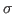
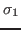
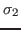
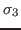
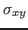
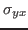
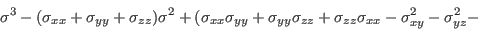
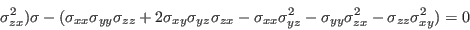

Next: Principal Strains
Up: Pre-defined Calculations
Previous: Von Mises Equivalent Strain
Contents
Principal Stresses
Entity names: PS1, PS2, PS3, worstPS
The principal stresses  are named PS1, PS2, PS3. From the three principal stresses the absolute maximum value will be calculated and named worstPS. For example if a node has the three values 100, 0 and -110 MPa then -110 MPa would be shown. The three principal stresses    are derived from the following equation:
They are given by the three roots of the equation (stress tensor is symmetric:  =  etc.):


root
2017-10-07
![\begin{displaymath}
\left [
\begin{array}{ccc}
\sigma_{xx}-\lambda & \sigma_{xy}...
... ]
=
\left [
\begin{array}{c}
0\\
0\\
0
\end{array}\right ]
\end{displaymath}](img24.png)